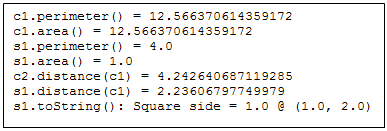
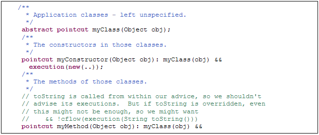
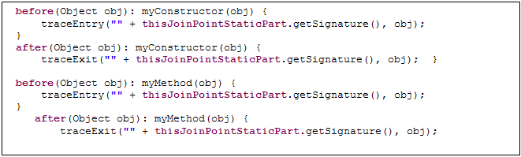
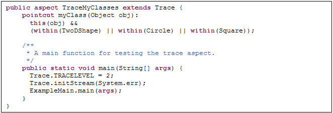
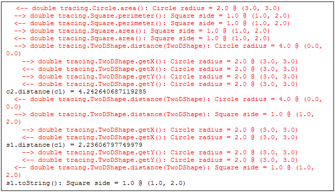
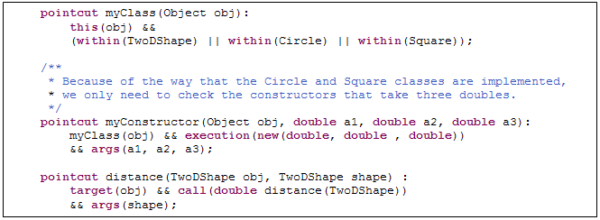
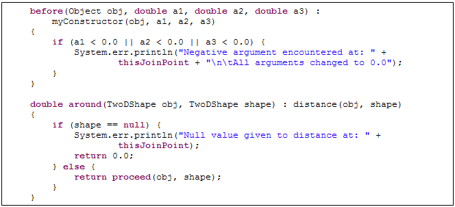
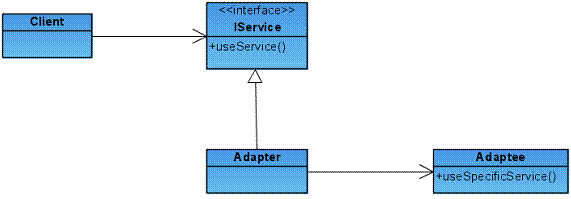
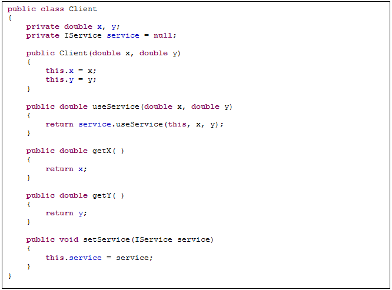
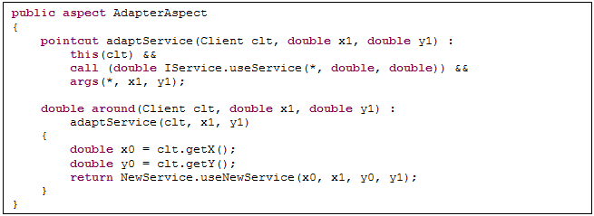

面向方面的编程：它的好处是什么？
级别： 初级
Gary Pollice, Professor of Practice, 伍斯特工学院
2006 年 3 月 15 日
来自于 Rational Edge：关于面向方面的编程的大多数介绍，都是建立在技术可行的有限环境的基础之上，而忽略了AOP的实际价值。这篇文章提供了将AOP技术应用于软件开发项目的一系列实际的例子。
http://www.ibm.com/developerworks/cn/rational/rationaledge/content/apr06/pollice/ill2.jpg
最近，我被要求领导我们软件工程研究小组（SERG）开一个关于面向方面的编程（AOP）的讨论。在会议开始前的几小时，一个学生问我：“那么，方面的好处是什么？但是不要给我关于日志的例子。那似乎是我阅读关于方面的东西时，唯一看见的东西。”他的问题促使我停下来，并考虑将AOP应用于一些正在做的软件系统的有效方法。他同时也使我认识到需要如何和什么时候采用新的方法，尤其是当他们需要一个新的思考方式时。AOP，我之前在这个专栏已经谈论过，它似乎代表了一个新方法。我想谈论一些我认为AOP可以被（或已经被）有效使用的方法。同时我们将看到一些可能有助于AOP推广的最新进展。
我将在讨论中使用面向方面的Java作为例子。然而，当今有很多种面向方面执行的可用语言。这些语言包括AspectC++甚至于AspectL，它是一种面向方面的Lisp执行语言。 1
如果你不熟悉AOP，有很多关于它的介绍文章，包括我2004年2月发表的的文章。 2 很多，也许不是全部，关于AOP的介绍使用日志作为一个例子来说明方面的概念。（日志是很多人都懂的东西，并且它是AOP可以被如何使用的一个很好的例子。）方面的关注点是横切。那就是说，它们不能被简单地归为一类。但是，如果我们严格按照面向对象的范例，我们需要将这些业务重新整合为一个统一的，可维护的方式。通常，横切的责任被委派给一个单独的帮助者类，并依靠每一类来要求由方面表达出的功能性，包括在合适的地点进行调用。保证开发人员始终在编码的合适点上插入登陆是较难实施的。方面提供了一个机制来改善这种状况，尽管它还不完美。
有一些概念你需要知道以便你理解这篇关于AOP的讨论。主要概念就是连接点。这是一个所有编程人员都熟悉的概念，但我们现在有一个新名字给它。一个连接点是：一个在程序流程中定义明确的点。 3 连接点有很多类型，正如一个方法的调用或一个方法的返回，都可以是一个正常的返回或者抛出一个异常。
使用AOP，我们需要一个在一个程序中识别连接点的方法。AspectJ使用切入点来描述一个或更多的连接点。切入点是一个用来描述一套连接点的表达式。你可以把切入点想象成对你的编码的一个查询，用它来返回一系列的连接点。
当你选择一系列连接点的时候，你可以为它们提供参考建议。参考建议是一种可执行的编码，当连接点遭遇到程序运行时，它就需要运行。连接点，切入点和参考建议关注于你的软件的动态属性。参考建议改变了程序编码的运行特性。
有一个可以处理你的系统的静态特性。就是类型间声明。类型间声明允许你改变一个程序的动态结构。你可以增加程序和变量，并根据特殊的规则改变继承性层次。
正如类是Java模块化的单元，方面是AspectJ模块化的附加单元。方面封装了一个横切关注点的连接点，切入点，类型间声明和参考建议。AOP不是面向对象分析和设计的一个替代。它通过处理许多面向对象方法不能充分提供最合适方案的情形，构建了面向对象的范例。
现在让我们来看看AOP可以在何处使用的一个实例。一些实例可以在生产系统中找到，而另外一些可以在生产和开发环境中找到。让我们从开发人员的一对实例开始吧。
我惊讶于如此多的开发人员将某些类型的打印语句放入他们的编码中，来调试或跟踪一个程序的执行。我发现调试程序善于给出信息。但我们不在这里讨论了解你的调试程序的价值。当然，想要生产一些你的程序的文本跟踪信息，是有一些合理原因的。在Eclipse当前的一套AspectJ Development Tools（AJDT）中有一个关于方面的很好的实例，那个方面实现了一个程序执行跟踪的过程。在Eclipse的帮助中，有关于这个实例的详细描述。你可以在AspectJ Programming Guide中找到它。
实例有一个小Java应用程序，它有很多类来表现二维图形，就像圆形和方形。同时它还有一个主要程序来创建两个圆形和一个方形，并打印出它们的方面，诸如面积，周长，以及它们中心点间的距离。当你运行程序时，你将得到如图1所示的输出结果。

http://www.ibm.com/developerworks/cn/rational/rationaledge/content/apr06/pollice/fig1.gif
图1：从形状程序的输入
如果我们想看见程序调用的真实顺序，我们有两个选择。第一种方法是，我们可以在每一个程序的开始插入编码，那样可以以程序和类的名字打印一个信息，并且事实上程序已经被输入。我们需要为每一个程序做上述的过程。第二种方法是，我们要创建一个方面来做完全一样的事情。用这种方法，我们不需要改变应用程序的任何编码。
跟踪实例包含使用方面跟踪解决方法的几个版本。我们来看最终的版本。其他版本的讨论请见AspectJ Programming Guide中的讨论。
一个稳固的跟踪机制的解决方法包含两个文件。第一个是一个抽象的方面。一个抽象的类的一些编码被留给了编程人员，编程人员使用它在一个导出的类中执行，或者在一个导出的方面中执行。这个抽象的方面，叫做Trace，有几种标准程序来打印关于输入和退出一个程序，或构造方法的信息以及格式化输出的结果。如果我们没有使用方面，这些程序将在一个帮助者类中，你可以用它来输出跟踪信息。Trace同时允许编程人员通过设置一个叫做TRACELEVEL的性质，来设置跟踪的类型。这里有三个级别：没有信息，没有缩进的信息，以及被缩进来表达被嵌套的调用的信息。
跟踪定义了三个切入点；其中的两个是具体的，一个是抽象的，正如图2所示。抽象的切入点是myClass，它必须通过可以扩展Trace的方面来提供。切入点的目的是为包含将被建议的连接点的对象选择类。这个让开发人员决定哪些类将被包括在跟踪输出结果中。

http://www.ibm.com/developerworks/cn/rational/rationaledge/content/apr06/pollice/fig2.gif
图2: 跟踪方面中的切入点
myConstructor切入点在任何构造方法的开始，它被myClass选择为类中的一个对象选择连接点。连接点是实际的主体。myMethod与myConstructor相似，但它在一个被选择的类中选择任何程序的执行。注释同样省略了toString程序的执行，因为它被用在了建议中。
方面提供的建议相当简单。在每一个连接点之前被插进的建议在连接点之后执行。这个如图3所示。

http://www.ibm.com/developerworks/cn/rational/rationaledge/content/apr06/pollice/fig3.gif
图3: Trace方面中的建议
为了使用Trace方面，你需要扩展它，并为抽象的切入点提供一个具体的执行。图4所示的是实例程序TraceMyClasses方面的实体。切入点只选择TwoDShape，Circle或Square实例的对象。主要程序设置TRACELEVEL，初始化跟踪流，以及运行实例的主要程序。

http://www.ibm.com/developerworks/cn/rational/rationaledge/content/apr06/pollice/fig4.gif
图4: 具体的跟踪方面
图5所示的是来自于运行实例部分的输出结果。注意：输出结果打印关于每一个对象的信息。这是每一个对象的toString程序的一部分。既然myClasses切入点公布对象到建议，那么建议就可以轻易地增加关于对象的信息。

http://www.ibm.com/developerworks/cn/rational/rationaledge/content/apr06/pollice/fig5.gif
图5: 跟踪结果举例
使用AOP方法进行跟踪比在需要的地方人工的插入跟踪代码有以下几条好处。
- 你只需要在一个（两个方面）地方放置你所有代码需要的用于跟踪的功能。
- 插入和删除跟踪代码是很容易的。你可以轻易地从构建配置中删除方面。
- 在任何你需要的地方跟踪代码，即使你增加了新的方法到目标类。这可以消除人为的错误。同时你知道所有跟踪代码被删除了，并且当你从构建配置中删除方面时不会忽略任何东西。
- 你有一个可重复使用的方面，它可以被应用和升级。
Bertrand Meyer介绍了契约式设计的概念。 4 这个原理声称一个类的设计者和这个类的使用者，共同分享关于类的实现的假设。合同包括不变量，先决条件和后置条件。契约式设计让类的设计者专注于实现了类的功能性的逻辑，而不用担心实参的有效性。当然，前提是合同规定了实参的先决条件。契约式设计避免了额外的编码并提高了性能，只要所有的客户都遵守契约。
当你为了广泛的使用而建立程序库时，你可能不能做关于实参有效性的假设，并且使用于你的程序中。你需要在继续进行每一个程序的逻辑之前检查实参。这是一个防御编程的实例。你假设任何可以发生错误的东西都可能会发生错误，并且你可以完美地解决它。
让我们说你们正要去使用简单状态程序并使它为公共所用时。你想要保证所有坐标在第一Euclidean象限——也就是说，x和y坐标是非负的。这是一个有效的约束，使得所有点都可以在一个窗口坐标中很好地表示出来，因为大多数视窗系统都将左上角的点作为(0, 0)，并且x坐标增加是向右，在你向下移时y坐标增加。为了你的内部需要，你要使用契约式设计进而来使用类，因为你已经在你的组织中控制开发人员。当你将它向外界的客户公布时，你要检查实参并且如果实参无效，你要给出一个例外。方面提供了一个一流的方法来实现它，这正是你要求实现的东西。
我们将建立一个方面来检查公共程序中的所有实参。我们要做的第一件事就是构造切入点。我们将使用来自于先前实例的myClass切入点，并增加切入点来选择需要检查实参的构造方法，并且距离程序保证了它没有调用无效值。图6所示的是我们需要的一套切入点。注意：第二个切入点规定了切入点的目标是TwoDShape的一个实例。这意味着在这样一个对象中这个切入点只会选择对距离程序的调用。

http://www.ibm.com/developerworks/cn/rational/rationaledge/content/apr06/pollice/fig6.gif
图6: 用于检查实参的切入点
最后，我们需要合适的通知。为了简单，当遇到一个无效的实参时，我们要打印一个信息并将实际值变为0，在构造方法方面，当一个无效值被通过时，忽略对距离的调用。图7所示的是这两个通知条目。

http://www.ibm.com/developerworks/cn/rational/rationaledge/content/apr06/pollice/fig7.gif
图7: 实参检查建议
当我们试图执行下列语句时：
Circle c3 = new Circle(3.0,2.0,-2.0);
c1.distance( null>);
在我们的程序中，我们得到如下的输出结果：
Negative argument encountered at: execution(tracing.Circle(double, double, double)) All arguments changed to 0.0 Null value given to distance at: call(double tracing.Circle.distance(TwoDShape))
我们可以通过显示准确的行数值和原始文件名称来做更多的有关错误信息的工作，但是这个实例显示的是基本的技术。
在一个大的项目中，你有很多类并暴露少数的一些接口，你可以使用用于方面的一个单独的目录来组织你的编码，进而实现实参的检查。我可以想象组织方面的几种方法，它们可以被很容易地识别和维护。当你为内部使用而构建系统时，你将使用一个内部的构建配置，并且当你为外部使用而构建它时，你将使用一个包含方面的配置。Eclipse AJDT使得新构建配置的创建变得简单。
对于好的编程来说，设计模式已经变成了 常用的方式。AOP可以给我们一种改进已经存在的模式和发现新模式的方法。实际上，横切关注点代码的注入，就是一种类型的模式。当前，一些研究人员正在评价使用AOP方法的设计模式的实现。英国哥伦比亚大学的Jan Hannemann一直在研究这个主题来作为他的哲学博士研究的一部分。他的主页，还有实现“四人帮”模式的代码下载位于：http://www.cs.ubc.ca/~jan/AODPs/上。 5 同样，Nicholas Lesiecki为IBM developerWorks写了关于方面和设计模式的文章。 6 查阅他的文章能得到比我这里提供的更详细的讨论。
让我们来看一个非常简单的关于如何实现一个标准设计模式的实例，它就是用AspectJ语言写的Adapter模式。
图8显示的是Adapter模式的一个Unified Modeling Language（UML）图。在这个模式中，客户需要一个服务并要为它设置一个请求。可能有很多服务的提供者，并且他们中的每一个可能对于服务有一个不同的名称，或者另外一些非标准要求是服务请求者所必须遵守的。好的面向对象的设计建议我们要将服务请求整合到一个目标接口中，在这个接口上编程，并建立一个适配器。要作为一个媒介在客户和服务之间工作（图表中的Adaptee），这就是必需的。

http://www.ibm.com/developerworks/cn/rational/rationaledge/content/apr06/pollice/fig8.gif
图8: 适配器模式
适配器的方法似乎是十分合理的。但如果你有一个传统的系统，但是它不是使用像适配器这样的模式设计的。最初的设计人员没有意识到将来变化的可能性。同时，对于服务的调用可能贯穿于整个应用程序。你将如何实现一个新的，改进的服务？没有方面，你将可能重新生成系统，将每一个调用定位于服务，设计一个适配器，并执行Adapter模式。这取决于旧服务被调用地点的数量，这个可能是一个十分使人畏惧的任务。重新改进编码是一个有价值的目标；然而，我们不会总那么奢侈。我们必须在时间的限制之下尽最大努力来满足于改进编码。
在这种情况下，我们可以建立Adapter模式的一个版本来解决即时的问题和为一个更有组织的，更好设计的系统提供一个步骤。
使用一个服务的简单客户显示在图9中。服务将返回从一个点到当前Client对象的距离。

http://www.ibm.com/developerworks/cn/rational/rationaledge/content/apr06/pollice/fig9.gif
图9: 简单客户
对于服务的接口描述了一个简单的方法：
double useService(Client clt, double x, double y); |
新改进的服务提供者有一个使用不同参数命名的方法，它的接口是：
double useNewService(double x0, double x1, double y0, double y1); |
我们要建立一个适配器，它将位于旧服务的调用之间，为新服务得到合适的实参，调用新服务，然后将结果返回到客户——不必改变客户。如图10所示：

http://www.ibm.com/developerworks/cn/rational/rationaledge/content/apr06/pollice/fig10.gif
图10: 调用新服务的适配器方面
注意方面是多么简单。我们说明一个切入点来识别对原始服务的useService方法的每一个调用。然后在从调用客户中抽取需要的信息之后，我们使用around通知，用新服务的一个调用来替代那个调用。
这个方法有不少好处和优势。第一，我们可以用一个简单的方面来改变贯穿于应用程序中的所有编码。我们还将业务整合成在一个地点调用服务。现在，如果一个新服务被一个更新的服务所替代，我们只需要改变这个方面的编码。这些对于一个更加稳固的系统当然是有好处的。
主要优势是旧客户仍然在系统中，即使它不被使用。如果我们有时间（我们似乎从来都没有），我们将最有可能返回并重新生成系统，来使用一个更加标准的Adapter模式。最起码，我们可以使用编码修改原始服务的useService程序来返回一个如0.0的哑值，因为它从来不被调用。
到目前为止，我们已经了解了一个十分有限但却有用的应用AOP的实例。我们可能要问技术上的提高比例会怎么样。有一个很明显的例子，我将在这里指出并简要描述一下。更加详细的内容请参见这个专栏的另一篇文章。
你们中的一些人可能熟悉 Spring 框架。 7 Spring 框架是一个应用程序框架，它支持开发企业应用程序。它提供了一个分层的J2EE框架来建立复杂的企业应用程序。用于Spring的基础技术之一是AOP。Spring已经开发了它自己的面向方面的实现，它允许交叉的逻辑在运行时刻被应用到编码中，而不用通过一个像AspectJ的编译程序来实现。然而，它提了供集成特性让你容易地将AspectJ和Spring 框架结合在一起。
Spring 当前正被很多组织使用来建立更好的企业应用程序，它们被很好地设计以及需要很少的开发时间。据我估计，它是我们如何将方面应用于真实问题的一个极好的例子。 8
在我看来，AOP将来将变成软件开发人员的工具包的一部分。我不知道是否我们将会达到在构建系统时将AOP作为主要设计机制的地步，但是我认为我们将会找到使用方面来增强我们的面向对象设计的方法。需要做许多事情来帮助加速这个过程。
第一，我们需要一些稳定的标准AOP实现。这个过程已经开始了。AspectJ的版本5是两种最流行的Java AOP语言，AspectJ和AspectWerkz的合并。在如C++的其它语言中的标准实现也会有帮助。
第二，我们需要确立一些能够使我们可以推断将AOP应用到特定系统的有效性的度量。例如，当我们使用AOP重新实现设计模式时，它们要比标准的面向对象模式好一些吗？在哪些地方它们更好而哪些地方不是呢？我们必须采取什么措施来得到信息和开发这些度量呢？天真方法的日子——我们相信如果一个系统是面向对象的（或选择你的技术），那么它是好的——结束了。我们需要在经验数据的基础之上作出设计和实现的决定。 9
第三，我们需要继续开发支持AOP的工具。我很高兴地说，Eclipse的新AJDT是一套很好的工具。这些工具继续改进对我们的支持能力，我们需要高效地并有效率地使用方面。工具也必须支持一个处理方面的新过程。
方面仍然呆在这里。它们仍然没有成为主流应用程序一部分的一个方法，但它们每一天都变得更加接近。我推荐你多关注它们并超越这条曲线。
1 关于AspectC++的信息可见于
2 Rational Edge的2004年2月版：http://www.ibm.com/developerworks/rational/library/2782.html
3 我正在使用的定义取自于优秀的AspectJ Programming Guide：http://www.eclipse.org/aspectj/doc/released/progguide/index.html
4 见Bertrand Meyer的，Object-Oriented Software Construction，第2版。Prentice Hall 1998。
5 四人帮包括 Erich Gamma，Richard Helm，Ralph Johnson和John Vlissides，他们编写了Design Patterns一书。这是在设计模式相关书籍中具有重大影响的书。
6 见http://www.ibm.com/developerworks/java/library/j-aopwork5/
7 见http://www.springframework.org/
8 为了得到更多关于Spring Framework的信息，我推荐此书，Pro Spring，Rob Harrop和Jan Machacek，Apress 2005。
9 如果有读者正在使用AOP并想与我讨论他们的经验，以及可能为我正在研究的项目提供一些信息，请联系我。
- 您可以参阅本文在 developerWorks 全球站点上的 英文原文。
http://www.ibm.com/i/c.gif |
||
| http://www.ibm.com/developerworks/rational/library/content/Authors/M-R/pollice.jpg |
http://www.ibm.com/i/c.gif |
Gary Pollice是位于伍斯特的伍斯特工学院的一个实践方面的专家，他获得了硕士学位。他教授软件工程，设计，测试，和其它计算机科学方面的课程，并且还指导做项目。在进入学术领域之前，他花费了多于三十五年的时间来开发各种类型的软件，从商业应用软件到编译器和工具。他的最后一份行业工作是做IBM Rational软件，在那里他以"RUP 倔老头;著称，并且他是Rational Suite团队最初的成员之一。他是Software Development for Small Teams：A RUP-Centric Approach，的主要作者，那本书是由Addison-Wesley于2004年出版的。他取得了数学专业的学士学位和计算机科学专业的硕士学位。 |